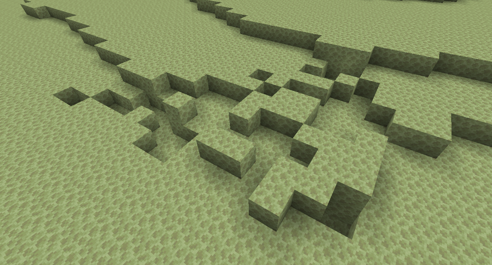

主世界（World） 下届（The Nether） 末地（The End）
- 山脉（Mountains）
- 浮岛（Floating Island）
- 空洞（Hollow）
- 丘陵（Hill）
- 地表（Surface Layer）
- 盆地（Basin）
- 岩柱（Bryce Pillar或Hoodoo）
- 冰山（Iceberg）
- 含水层（Aquifer）
- 洞穴（Cave/Cavern）
- 峡谷（Canyon或Ravine）
- 矿脉（Ore Vein）
山脉（Mountains）返回主世界
山脉（Mountain）是具有陡峭的山的地形。有时，一些洞穴会穿过山脉。在放大化世界中，山脉是极其常见的（除了在海洋和沼泽生物群系）。

一个突出、悬空的巨型结构，常出现在极高的山脉上

一个风袭丘陵生物群系
山脉上悬崖与浮岛
浮岛（Floating Island）返回主世界
浮岛（Floating Island）是一种飘浮在空中，不与地面、海洋、山脉和悬崖连接的结构。浮岛通常只是在悬崖附近的随机泥土和石头，但在极其 罕见的情况下，它们会非常巨大，以至于飘浮在半空中，甚至有涌泉和树木在上面。浮岛通常能在风袭丘陵、雪原、山地和蘑菇岛生物群系被发现， 但其实在任何地方都有可能生成，尤其是在风袭热带草原生物群系中。

一个小浮岛

自然生成的浮岛

另一个浮岛

小而高的浮岛，有水流下
空洞（Hollow）返回主世界
空洞（Hollow）与浮岛相反。它们看起来像洞穴，但与洞穴生成无关（尽管它们可能与洞穴交叉）。当有许多悬崖时，它们会靠在一起并创造出一个空洞。它们的高度与地形一致，这取决于它们所在的生物群系，而不像洞穴那样。洞穴没有特定的高度。有趣的是，即使没有光，草方块也可以在空洞中生成。当空洞生成在低于海平面的高度上时，它们会被水填充。空洞在主世界中非常罕见，但在自定义世界中很常见。

默认世界的一个空洞（火把由玩家放置）

另一个连接着洞穴的空洞
丘陵（Hill）返回主世界
丘陵（Hill）是地图中陆地上随机产生的地形。像楼梯一样，丘陵不会很陡峭，每层总是会有地方可以登上更高一层，这意味着玩家可以一层一层爬上山顶而不必借助任何工具。不能徒步爬上的丘陵是很稀有的。

一个长着树木和草丛的随机生成的丘陵
地表（Surface Layer）返回主世界
地表（Surface Layer）的最顶层会依据生物群系被转换成其他方块，通常是草和泥土，或者是沙漠、沙滩上的沙子。灰化土通常存在于原始针叶林地表，菌丝体通常在蘑菇岛生物群系上，红沙则是在恶地生物群系上。砂岩通常垫于沙子层之下。
一个长着树木和草丛的随机生成的丘陵
盆地（Basin）返回主世界
有的时候，地形的表面不会被转换成其他方块，而是被直接移除，留下石头裸露的盆地（Basin）。游戏中的盆地与地理学上的“地盾”（构造稳定的岩石地区，由于其非常古老的原因而长期遭受侵蚀，与地质术语“盆地”有所不同）有一些相似之处。它们更多地在森林和平原中生成，偶尔被水淹没，玩家可以在其中发现矿石（通常为煤矿石和铁矿石）。如果这个地形生成在恶地生物群系中，也可以在其中发现金矿石。

自然生成的盆地地形

一个沙漠盆地

一个针叶林盆地

积雪的盆地

一块生成在平原的大盆地

岩柱（Bryce Pillar或Hoodoo）返回主世界
岩柱（Bryce Pillar或Hoodoo）是生成在恶地生物群系里的刺状的结构，由6种颜色的陶瓦组成。尽管这种地形只能在风蚀恶地里找到，事实上所有的恶地生物群系都有这种结构，只是被设为false，除了风蚀恶地。这种结构从地面突出，有时能超过海拔100层。

风蚀恶地里的岩柱

旧版本里的岩柱
冰山（Iceberg）返回主世界
冰山（Iceberg）是生成在冻洋和冰冻深海生物群系海面上由浮冰与雪组成的地形特征。冰山拥有十分迥异的形状和尺寸，小到“微岛”，大到山脉。它们亦会生成“洞穴”一样的洞，这些洞可能贯穿整座冰山。与冰山地物不同，冰山地形特征不会生成蓝冰。

第一张冰山的截图

一座自然生成的冰山

从空中视角看有冰山的冻洋

从水下看冰山
峡谷（Canyon或Ravine）返回主世界
峡谷（Canyon或Ravine）是地下高而长的裂缝。在Java版中，峡谷的深度约为27-62格，在基岩版中，峡谷通常能直接延伸至基岩层。峡谷有时会深入海底，形成海沟。

在地下连接在一起的两条峡谷

暴露于天空下的峡谷

一条被河流生物群系截断的露天峡谷

一条水下峡谷

一条暴露了废弃矿井的峡谷
矿脉（Ore Vein）返回主世界
矿脉（Ore Vein）是由矿石和岩石构成的罕见大型结构，形状类似于意面洞穴，生成于主世界的地下。矿脉有铁矿脉与铜矿脉两种。铁矿脉在主世界Y=-60到Y=-8的高度伴随凝灰岩生成；铜矿脉在主世界Y=0到Y=50的高度伴随花岗岩生成。粗铁块和粗铜块也有较小的概率在对应的矿脉中生成。

铁矿脉（左下）和铜矿脉（右上）

发掘出的铜矿脉

发掘出的铜矿脉
下届（The Nether）
熔岩海（Lava Sea）返回主世界
熔岩海（Lava Sea）是下界31层以下出现的广阔的熔岩海域。熔岩海十分常见，是下界的主要光源之一。熔岩海可以在四面延伸数百米，海岸一般由下界岩组成，有时候是灵魂沙或岩浆块。

两个恶魂在熔岩海上
下界盆地（Nether Basin）返回主世界
下界盆地（Nether Basin）的大小和形状与主世界的盆地相同。但不同的是，下界盆地使用下界岩代替地面，而不是石头。下界盆地有时也会暴露出下界石英矿石和下界金矿石。值得注意的是，下界盆地的生成与y坐标无关。两个完全相同的盆地可能会在相同的x和z坐标，不同的y坐标处生成。

绯红森林的一个盆地，其中含有下界石英矿石

诡异森林的一个盆地

下界荒地的一个大盆地
外部岛屿（End Nether Island）返回主世界
外部岛屿（End Nether Island）距离中央岛屿有大约1000米远，岛屿大小不一。末地城、紫颂树和末地船会生成在此处。玩家可以通过末地折跃门传送到此处。
生长着紫颂树的外部岛屿
末地盆地（End basin）返回主世界
像在主世界和下界那样，末地盆地（End basin）会在末地生成。盆地可以在中央岛屿和外部岛屿生成。紫颂树偶尔会植根于盆地中。
生成于末地中央岛屿的盆地
末地外部岛屿的大盆地